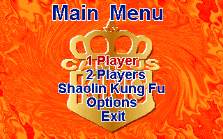
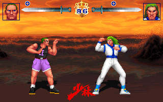

名稱：烈火少林 (ShaoLin Campus King，英文版) 簡介：Mascot 1997年出品的格鬥遊戲，由中國標準出版社代理發行 [待補]。

保護：光碟 備註：本遊戲必須在Win31/9x/XP系統下安裝，然後在DOS環境下執行（要執行SOUNDSET.EXE 設定音效卡）。 操作：可在遊戲中設定，以下為內定值： 1P 2P ---------------------------- 上 S 上 下 X 下 左 Z 左 右 C 右 高拳 U Home 低拳 N End 高踢 I PgUp 低踢 M PgDn 格擋 J Pad-5 Enter = 確定 Esc = 取消